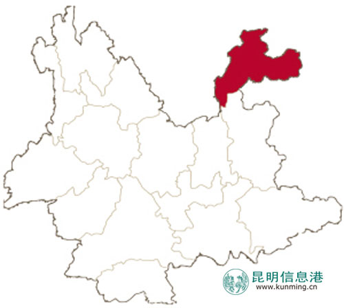
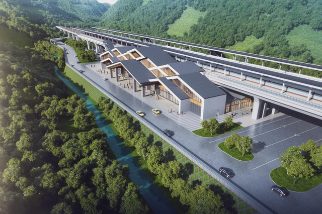

回顶部
回顶部
昭通市位于云岭高原与四川盆地的结合部，地处东经102°52′～105°19′，北纬26°55′～28°36′之间，东侧紧邻贵州省毕节市，南侧紧邻云南曲靖市，西侧紧邻四川凉山彝族自治州以金沙江为界相邻，北侧紧邻四川宜宾市以金沙江为界相邻，面积2.3万平方千米。
凤凰广场位于迎宾大道和昭鲁大道交汇处，项目占地163568㎡，总建筑面积将超过50万㎡，这样的地段和体量，为塑造城市地标奠定了坚实的基础，同时，也为优秀的产品规划、建筑排布与景观营造，提供了充分的空间载体，在这样的情况下，凤凰广场成为昭通城市进阶的领跑者，顺理成章。
昭通站（Zhaotong Railway Station），位于中国云南省昭通市，是中国铁路成都局集团有限公司昭通站管辖的三等站 [4-5]，建于2002年，距离安边站227公里，距离梅花山站136公里。

回顶部